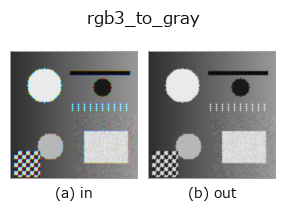

color op• Data kinds: color → image
• Call: fullseye.apply(img, "rgb3_to_gray", a=0.5, b=0.5) (the 2-D model is one image plus two scalar knobs a,b∈[0,1])
• HALCON equivalent: rgb3_to_gray (the HALCON reference is a useful guide to its meaning and parameters)

*The figure is the actual output on a synthetic 128×128 input. Left: input, right: output. Point clouds are drawn as a top-down scatter (brightness = z), 1-D series as a line plot, volumes as the maximum-intensity projection along z, videos as the middle frame, complex images as magnitude; return values that are not pictures are shown as the values themselves.*
*Knob a does not change the output (measured: identical at 0.1 / 0.5 / 0.9).*
*Knob b does not change the output (measured: identical at 0.1 / 0.5 / 0.9).*
Stages (the ops that come before → this op, left to right):
▸ rgb3_to_gray: stages (docs site)
On other images (synthetic scene / photo / coins. Top row: inputs, bottom row: their outputs. Knobs at default):
▸ rgb3_to_gray: other inputs (docs site)
Converts an RGB image to luminance (grayscale). Both HALCON's `rgb1_to_gray and rgb3_to_gray` (convert an RGB image to a grayscale image) are mapped to this single implementation.
> The detailed description below is the original text — the summary and the headings are translated.
ITU-R BT.601 系の重み `0.299 R + 0.587 G + 0.114 B` で輝度を計算する
固定式。a, b は未使用。
• gallery2d_color_artistic family guide
• colorimetry — 測色と分光の知識 — 色は「分光 × 光源 × 観測者」でしか決まらない
• Sample-data catalog (download URLs / licences) — 2-D uses skimage.data (BSD/public domain) plus synthetic images; 3-D lists download URLs for real data sources (Stanford, PDS, …).
• Operator provenance and references — the sources of the research/methods this op family came from.
• The canonical algorithm (author, year) and its uses are named in the family usage guide above.
The program below has been verified to run (same input as the figure). In Studio's help this block becomes buttons that load and run it on the spot.
cfa_to_rgb 0.50 0.50 rgb3_to_gray 0.50 0.50
▸ Load this pipeline · Load & run
• gallery2d_color_artistic — py -3.11 examples/gallery2d_color_artistic.py
image as input)identity · gaussian · mean_box · bilateral · unsharp · median · min_filter · max_filter
color)cfa_to_rgb · trans_from_rgb · trans_to_rgb · linear_trans_color · principal_comp · rgb1_to_gray · access_channel
*Provenance: ops.py — 2D operator registry. This per-op note is generated by tools/opdocs.py md (do not hand-edit).*
© 2026 Kazufumi Furuse — Fullseye operator documentation. Licensed under Apache-2.0.
{kind=link}
{kind=link}